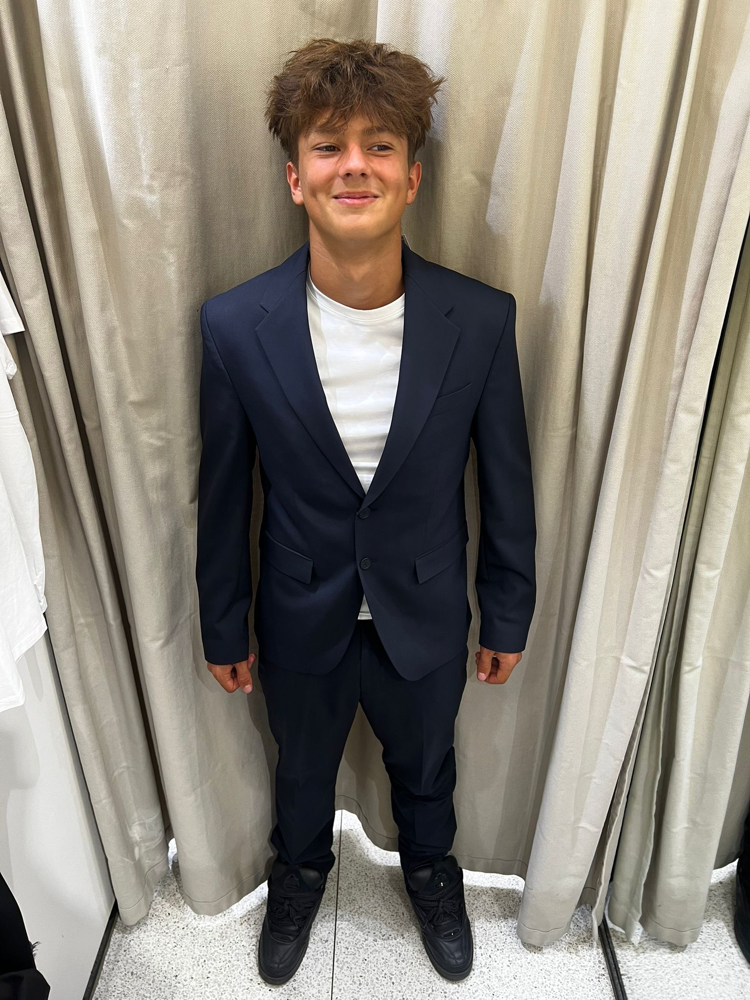

Životní prostředí, průmysl a obchod, spravedlnost
Irind Zelka
„Moderní ekonomika musí být konkurenceschopná i odpovědná.“
- Podporuje rychlejší přechod k energeticky odolnému průmyslu.
- Chce jednodušší podmínky pro podnikání a start-upové prostředí.
- Prosazuje elektronizaci justice a přehlednější exekuční systém.
- V oblasti životního prostředí klade důraz na vodu, klima a biodiverzitu.